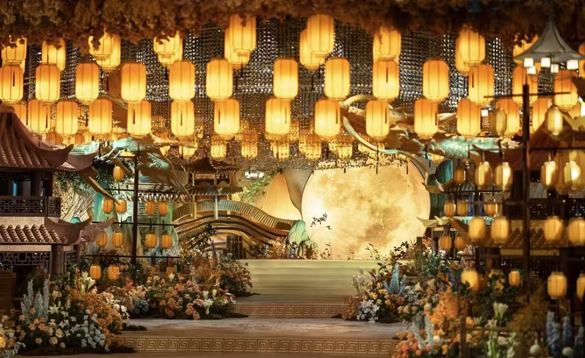

传统婚礼：传承千年的浪漫与庄严 |
|  |
传统婚礼场地通常选择具有中式风格的建筑或装饰，如宫殿、庙宇、庭院或现代酒店的中式宴会厅。场地布置以红色为主色调，象征喜庆和吉祥。入口处常设有牌坊或拱门，上书吉祥语或对联，迎接宾客的到来。 色彩搭配：以红色为主，金色、蓝色等为辅，营造出尊贵与喜庆的氛围。红色地毯、红色灯笼、红色窗花等装饰物随处可见，金色则常用于点缀，如金色屏风、金色烛台等。 灯光与音乐：现场灯光柔和而温馨，营造出浪漫而庄重的氛围。音乐则选择传统乐器演奏的古典乐曲，如古筝、琵琶、二胡等，增添婚礼的文化气息。 装饰物：灯笼、屏风、对联、窗花、纸扇等传统装饰物被广泛应用于婚礼现场，它们不仅具有装饰作用，还寓意着吉祥和幸福。 |
新娘篇 例：秀禾服：仿佛从古老画卷中走出的佳人，身着一袭精致的秀禾服，那立领或圆润的领口，勾勒出新娘温婉的颈部线条。下摆的马面裙，层层叠叠，随着步伐轻轻摇曳，如同绽放的莲花，散发着淡淡的幽香。绸缎面料在阳光下泛着柔和的光泽，手工苏绣的龙凤呈祥图案，栩栩如生，寓意着新人未来生活的幸福美满。 新郎篇 |
传统婚宴菜品丰富多样，以中式菜肴为主，如红烧狮子头、东坡肉、松鼠鳜鱼等经典菜品。这些菜品不仅色香味俱佳，还寓意着吉祥和幸福。同时，婚宴上还会准备各种甜点、饮品和水果，供宾客享用。 喜糖、喜烟、喜酒、喜帖等，都是传统婚礼中不可或缺的用品。它们不仅具有实用价值，还寓意着吉祥和幸福。 |